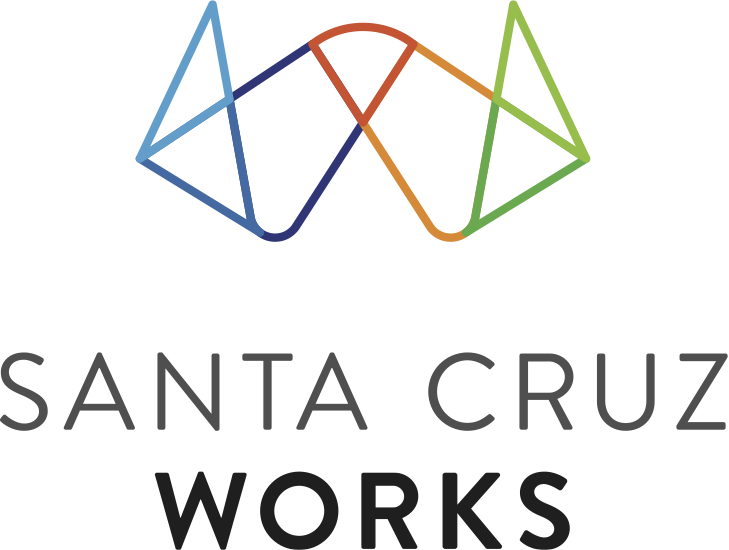
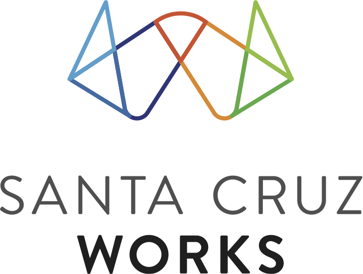

This interactive series is focused on building the foundation to become a successful entrepreneur. The clinics are for both idea stage and working stage entrepreneurs looking to increase their knowledge and enhance their chances of success. Entrepreneurship demands adaptability, decisiveness, up-to-date info, and insights. The decisions you make early on can make a huge difference in outcomes.
Accelerate your knowledge and ability to execute effectively by learning from top experts who do this day in and day out.
Each session will have a short presentation followed by a clinic, where participants can receive specific guidance on their unique challenges.
Bring your challenges and get the help you need.
Sponsored By:
 
